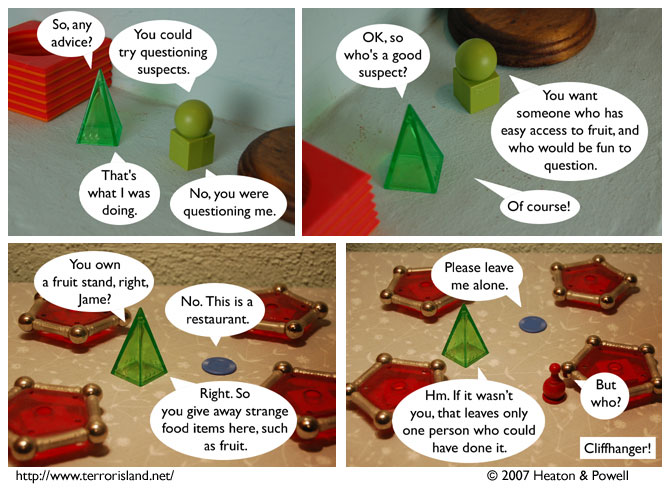

Strip #99
— Monday, January 29, 2007
Polite requests to be left alone are excellent alibis
Notes, Thoughts, &c.
Ben’s Notes
Readers! Aorist needs your help to solve this mystery! Go to this forum thread to tell us who you think brought Sid and Stephen the mystery fruit. Or if you don’t want to bother with making a forum account, email us your guess.
Guesses submitted via email will be incorrect.
Lewis’s Notes
Personally, my money is on Gibbs and/or Lockley.